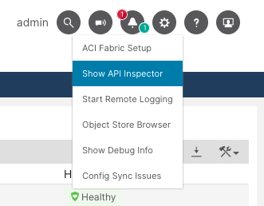
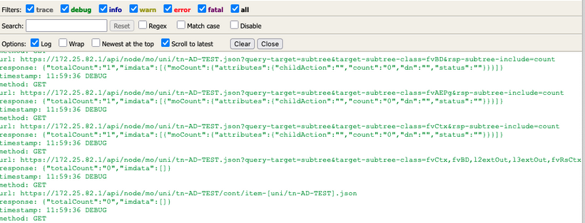
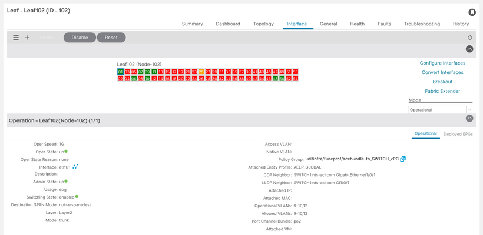
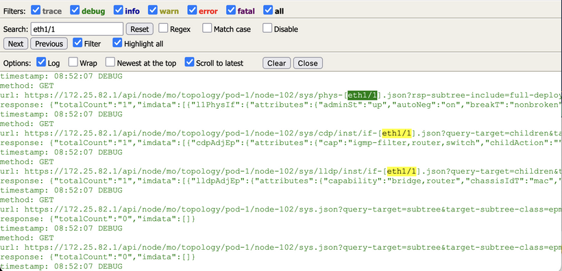

First Approach to Cisco ACI APIs¶
Let's see how to write our first automation for Cisco ACI. As we said, Cisco ACI is designed to be API-first: every operation is performed through APIs.
Cisco made an interesting design choice. To document the APIs effectively and durably, they built a web interface that itself uses only APIs. By observing what happens while we use the web interface, we can identify the APIs that are called and the parameters they require. Cisco also added a feature to the web interface, the API Inspector, which lets us observe the APIs in use.
We can therefore say that the Cisco ACI APIs are self-documenting. Cisco also provides an official APIC REST API User Guide, which will be very useful later on, but to get started, the API Inspector is the fastest way to get results.
Let's go through the process step by step.
API Inspector¶
First, we connect to the APIC and go to Tools → Show API Inspector:

A new browser window opens, containing the API Inspector. We navigate through the web interface and add a tenant. In the API Inspector window, we see all the API calls performed by our actions:

For example, if we select our tenant in the web interface, we find a POST call and its payload:
method: POST url: https://172.25.82.1/api/node/mo/uni/tn-AD-TEST.json payload: { "fvTenant": { "attributes": { "dn": "uni/tn-AD-TEST", "name": "AD-TEST", "rn": "tn-AD-TEST", "status": "created" }, "children": [] } }
The API Inspector gave us all the information we need to write a Python script that creates a new tenant.
Switch Neighbors¶
Let's now look at a more complex example: we want a report of all the fabric interfaces, including their CDP neighbors.
With the API Inspector enabled, we go to Fabric → Inventory → Pod → Leaf → Interface:

We select an active interface and observe the API Inspector:

The request we are interested in is the following:
method: GET url: https://172.25.82.1/api/node/mo/topology/pod-1/node-102/sys/cdp/inst/if-[eth1/1].json?query-target=children&target-subtree-class=cdpAdjEp
Three parameters are required:
- Pod ID (1).
- Node ID (102).
- Interface ID (eth1/1).
If we observe the API Inspector while expanding the Pod 1 tree, we notice that a specific URL is called to retrieve the switches associated with the pod:
method: GET url: https://172.25.82.1/api/node/mo/topology/pod-1.json?query-target=children&target-subtree-class=fabricNode
At this stage, our only goal is to reach the result as quickly as possible. We will see later how to optimize and harden our script.
We now need the list of all the interfaces of each leaf. If we go to Fabric → Inventory → Pod → Leaf → Interfaces, we see the API Inspector calling the following URL:
method: GET url: https://172.25.82.1/api/node/class/topology/pod-1/node-101/l1PhysIf.json?rsp-subtree=children&rsp-subtree-class=ethpmPhysIf&rsp-subtree-include=required&subscription=yes&order-by=l1PhysIf.id|asc&page=0&page-size=100
Assuming a single-pod deployment, we can now develop our script.
Developing the Script¶
In the previous article, we already saw how to log in to the fabric.
First, we retrieve the list of leaves. We already have the correct API call: we only need to extract the data structure and integrate it into our script:
# Get leaves
url = f"https://{apic_address}/api/node/mo/topology/pod-1.json?query-target=children&target-subtree-class=fabricNode&challenge={token}"
res = session.get(url, json=payload, verify=False)
res.raise_for_status()
leaves_list = []
for node in res.json()["imdata"]:
if node["fabricNode"]["attributes"]["role"] == "leaf":
leaves_list.append(node)
For each leaf, we then retrieve the list of all the interfaces:
# Get interfaces
for leaf in leaves_list:
url = f"https://{apic_address}/api/node/class/topology/pod-1/node-{leaf['id']}/l1PhysIf.json"
res = session.get(url, verify=False)
res.raise_for_status()
interface_list = []
for interface in res.json()["imdata"]:
interface_list.append(interface["l1PhysIf"]["attributes"])
Finally, for each interface, we retrieve the CDP neighbors:
# Get CDP neighbors
url = f"https://{apic_address}/api/node/mo/topology/pod-1/node-{leaf['id']}/sys/cdp/..."
res = session.get(url, verify=False)
res.raise_for_status()
cdp_neighbors = res.json()["imdata"]
Printing the Report¶
In real scenarios the script may take a long time to run, so it is typically run at regular intervals and the report is saved, to be accessed on demand. In our example, we use tabulate to print the report directly to the terminal.
PodID LeafID LeafName Interface RemoteName RemoteInterface
------- -------- ---------- ----------- -------------------- --------------------
1 102 Leaf102 eth1/1 SWITCH1.nts-aci.com GigabitEthernet1/0/1
1 102 Leaf102 eth1/6 SWITCH2.nts-aci.com GigabitEthernet1/0/2
1 102 Leaf102 eth1/7 SWITCH2.nts-aci.com GigabitEthernet1/0/4
1 102 Leaf102 eth1/9 ROUTER1.nts-aci.com GigabitEthernet0/2/1
1 102 Leaf102 eth1/10 ROUTER1.nts-aci.com GigabitEthernet0/2
1 102 Leaf102 eth1/11 ROUTER2.nts-aci.com GigabitEthernet0/2
1 101 Leaf101 eth1/1 SWITCH1.nts-aci.com GigabitEthernet1/0/2
1 101 Leaf101 eth1/2 SWITCH1.nts-aci.com GigabitEthernet1/0/3
1 101 Leaf101 eth1/3 SWITCH1.nts-aci.com GigabitEthernet1/0/4
1 101 Leaf101 eth1/11 ROUTER2.nts-aci.com GigabitEthernet0/1
1 101 Leaf101 eth1/13 ROUTER3.nts-aci.com GigabitEthernet0/1
The full example code is available in the GitHub repository.